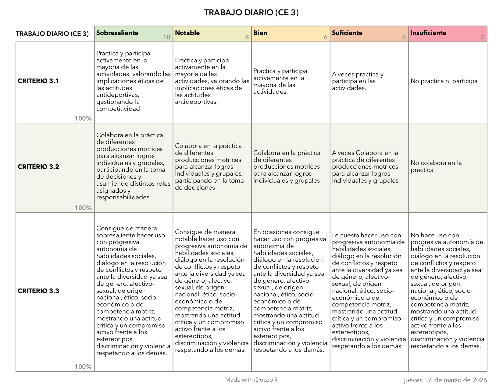
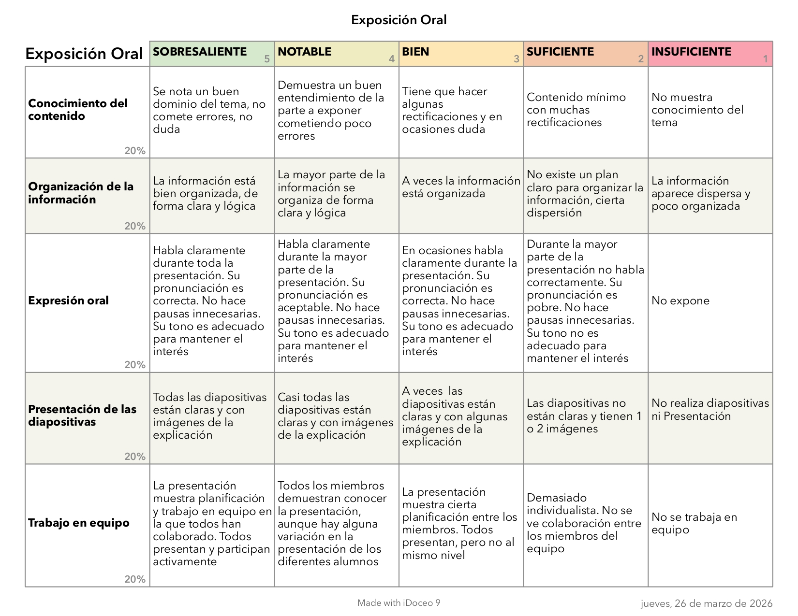

Descripción de la Rúbrica
1.1. Descripción:
La rúbrica analítica se utilizará para evaluar tanto el producto final (programa de entrenamiento con QR) y su exposición oral como la práctica y la participación del alumnado en el proceso de la realización del programa de entrenamiento. Permite valorar de forma objetiva distintos criterios clave.
1.2. Momento de aplicación
• Entrega del producto final
• Durante la exposición en clase
1.3. ¿Qué evalúa?
• Practica y participa activamente
• Colaboración en la práctica
• Autonomía
• Adecuación al nivel
• Uso de códigos QR
• Calidad de los contenidos digitales
• Exposición oral
• Trabajo en equipo
A continuación, adjunto dos rúbricas utilizadas en el proceso de evaluación:


1.4. Obtención y análisis de datos
• Media o ponderación según relevancia
• Registro de observaciones cualitativas
1.5. Uso de los datos
• Detectar el nivel competencial del alumnado
• Identificar dificultades en planificación o competencia digital
• Mejorar futuras propuestas didácticas
• Ofrecer feedback individualizado y cooperativo
1.6. Variables a considerar
• Diferente competencia digital
• Nervios en la exposición
• Participación desigual en grupos